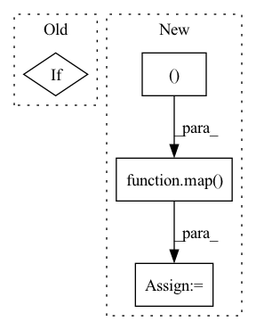

Pattern ID :676
Before Change
x, (mem_out, lmem_out) = attn(x, memories = memories, calc_memory = use_memory, input_mask = mask, pos_emb = pos_emb)
x, = ff(x)
if use_memory:
next_mem.append(mem_out)
next_lmem.append(lmem_out)
out = self.to_logits(x)After Change
mem = default(mem, init_mem)
lmem = default(lmem, init_mem)
mem_len, lmem_len = map( lambda t: t.shape[2], (mem, lmem ))
total_len = mem_len + lmem_len + self.seq_len
pos_emb = self.pos_emb[:, (self.seq_len - t):total_len]
mem_iter, lmem_iter = map(iterate_tensor, (mem, lmem))In pattern: SUPERPATTERN
Frequency: 4
Non-data size: 4
Instances Fragment ID: 2614327
Project Name: lucidrains/memory-transformer-xl
Commit Name: cbabe1ae6fa311092a9d0a88116c079a5ad8d790
Time: 2020-07-22
Author: lucidrains@gmail.com
File Name: memory_transformer_xl/memory_transformer_xl.py
M Class Name: MemoryTransformerXL
N Class Name: MemoryTransformerXL
M Method Name: forward(4)
N Method Name: forward(4)
M Parent Class: nn.Module
N Parent Class: nn.Module
M File Name: memory_transformer_xl/memory_transformer_xl.py
N File Name: memory_transformer_xl/memory_transformer_xl.py
M Start Line: 255
M End Line: 296
N Start Line: 306
N End Line: 345
Before Change
q = merge_heads(q)
if not self.one_kv_head:
k, v = map(merge_heads, (k, v))
out = []
After Change
lq, q = split_index_fn(q)
split_kv_fn = partial(split_at_index, 1, int(self.local_attn_heads > 0))
(lk, k), (lv, v) = map( split_kv_fn, (k, v ))
local_expand_heads_fn = lambda t: expand_dim(t, 1, self.local_attn_heads, unsqueeze=False)
lk, lv = map(local_expand_heads_fn, (lk, lv))
Fragment ID: 2614326
Project Name: lucidrains/linear-attention-transformer
Commit Name: 75a6cefd9d7facce1ff162dc70138a6e32358f3c
Time: 2020-06-29
Author: lucidrains@gmail.com
File Name: linear_attention_transformer/linear_attention_transformer.py
M Class Name: SelfAttention
N Class Name: SelfAttention
M Method Name: forward(5)
N Method Name: forward(5)
M Parent Class: nn.Module
N Parent Class: nn.Module
M File Name: linear_attention_transformer/linear_attention_transformer.py
N File Name: linear_attention_transformer/linear_attention_transformer.py
M Start Line: 304
M End Line: 320
N Start Line: 308
N End Line: 327
Before Change
if self.training and self.layer_dropout > 0:
to_drop = torch.empty(len(self.blocks)).uniform_(0, 1) < self.layer_dropout
blocks = [block for block, drop in zip(self.blocks, to_drop) if not drop ]
blocks = self.blocks[:1] if len(blocks) == 0 else blocks
block_args = list(map(lambda x: {"f_args": x[0], "g_args": x[1]}, block_args))After Change
if self.training and self.layer_dropout > 0:
layers_and_args = layer_drop(layers_and_args, self.layer_dropout)
blocks, args = map( lambda ind: list(map(itemgetter(ind), layers_and_args)), (0, 1 ))
out = _ReversibleFunction.apply(x, blocks, args)
return torch.stack(out.chunk(2, dim=-1)).sum(dim=0)
Fragment ID: 2614325
Project Name: lucidrains/sinkhorn-transformer
Commit Name: d5b9c649e59290b15c15f85d0bb182cb20b699fb
Time: 2020-04-15
Author: lucidrains@gmail.com
File Name: sinkhorn_transformer/reversible.py
M Class Name: ReversibleSequence
N Class Name: ReversibleSequence
M Method Name: forward(2)
N Method Name: forward(2)
M Parent Class: nn.Module
N Parent Class: nn.Module
M File Name: sinkhorn_transformer/reversible.py
N File Name: sinkhorn_transformer/reversible.py
M Start Line: 133
M End Line: 142
N Start Line: 161
N End Line: 174
Before Change
// pad for last token in video
if padding > 0:
x = F.pad(x, (0, 0, 0, padding), value = 0.)
// derive queries / keys / values
After Change
k, v = map(lambda t: rearrange(t, "b (f h w) d -> b d f h w", f = num_frames, h = fmap_size), (k, v))
k, v = map(lambda t: unfoldNd(t, kernel_size = kernel_size, padding = kernel_size // 2), (k, v))
k, v = map(lambda t: rearrange(t, "b (d j) i -> b i j d", j = kernel_size ** 3), (k, v))
k, v = map( lambda t: t[:, :(n - 1)], (k, v ))
// append bos keys and values
k_bos, v_bos = map(lambda t: repeat(t, "b 1 d -> b n 1 d", n = k.shape[1]), (k_bos, v_bos)) Fragment ID: 2614323
Project Name: lucidrains/nuwa-pytorch
Commit Name: 7d904d1fdd0776ffb9e0a20d0857d47c7988f90a
Time: 2022-01-03
Author: lucidrains@gmail.com
File Name: nuwa_pytorch/nuwa_pytorch.py
M Class Name: Sparse3DNA
N Class Name: Sparse3DNA
M Method Name: forward(3)
N Method Name: forward(3)
M Parent Class: nn.Module
N Parent Class: nn.Module
M File Name: nuwa_pytorch/nuwa_pytorch.py
N File Name: nuwa_pytorch/nuwa_pytorch.py
M Start Line: 423
M End Line: 494
N Start Line: 423
N End Line: 494